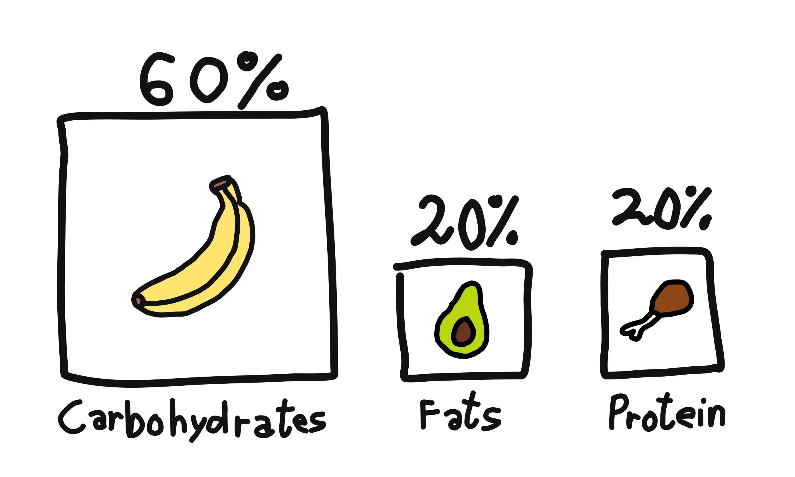
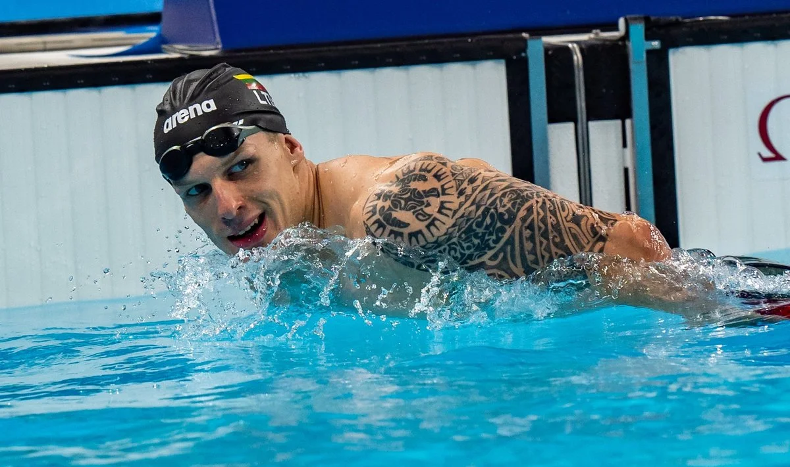
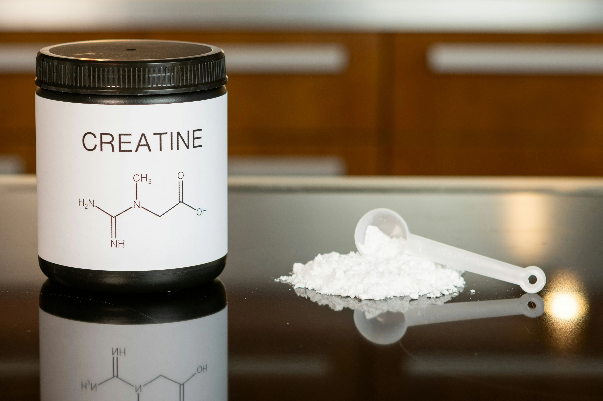
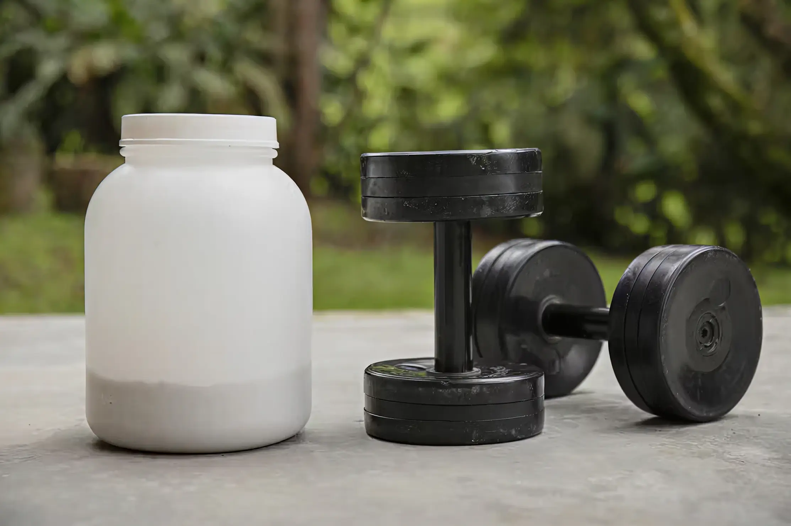

How Diet and Supplements Can Boost Your Athletic Performance
Interview with famous Lithuanian Paralympic medalist swimmer - Edgaras Matakas
Sports technologies have been rapidly developing these days. They are designed to assist and boost anyone's fitness and athletic journey. Developed training techniques, technologies that prevent injuries or help you recover quicker and effective, healthy, nutritious dietary plans are what let you achieve something that people in the last century only could have dreamed of. However, I am dedicating this article to teaching my readers about the impact of a good diet, supplements in achieving your goals in sporting.
Most of sportsmen say, that food is the most important part in becoming an athlete. A diet that balances macronutrients is a must for any person wishing to live a fit and athletic life let alone achieve anything in your sports career. A good dietary plan makes sure that your muscles develop and grow properly and faster, don't get an illness, and most importantly keeps your body in good shape.
A calculated ratio of macronutrients in a proper diet should look like this: 60% carbohydrates, 20% fats, and 20% protein. To describe how a diet that corresponds with this ratio should look like, we will learn about Edgaras Matakas (who is a Paralympian swimmer with multiple global titles) breakfast, lunch and dinner.
His morning starts with protein Oatmeal porridge and fruits. After morning training, he eats bananas or other fruits to recover faster. For lunch he eats salad, soup, steak and after that some protein snacks. And to end the day he eats fish for dinner. This is one of the great examples of a balanced meal plan. Thus, we can safely agree with the statement that food is the most important part when it comes to sport, and it is a must that you are eating plan is diverse and nutritious.
Supplements are products that add nutritional value to your diet. They support your health and athletic performance. The most important supplements for sportsmen are the ones that enhance their performance and supply them with protein, amino acids.
A popular example of performance enhancement supplements these days in fitness is creatine. Creatine is one of the most well researched and known supplements in the world. Creatine boosts ATP regeneration, allowing athletes to improve their performance in activities that require quick bursts of energy. Creatine has a variety of other benefits too: It improves strength and power, increases your muscle mass, speeds up your recovery, and emerging research states that it also has positive effects on your brain.
The best protein and amino acid supplements come from Whey (the liquid remaining after milk has been curdled and strained). Whey is a byproduct of cheese that is processed, dried and turned into powder. Whey protein boosts your muscle growth and repair, boosts your post-workout recovery, is a good supplement in weight loss and most importantly it is very convenient compared to regular foods.
In general supplements are a great way for athletes to boost their fitness journey, however they aren't a priority because most of the things supplements offer can be obtained by having a balanced diet.
In conclusion the effect that a good diet and supplements have on athletes is huge and it is a must to make sure that your body gets the necessary macros and nutrients it needs.